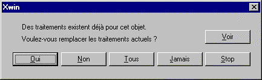

Ce choix permet d'ajouter des points d'arrêts et des points de traitement à tous les objets précédemment sélectionnés.
Les champs à saisir sont :
|
Arrêt Avant / Après / Clic |
Numéro du point d'arrêt (valeur comprise entre 1 et 65000). |
|
Traitement Avant / Après / Clic |
Nom du traitement. |
Si un point de traitement ou un point d'arrêt doit être remplacé, Xwin affiche la boîte de dialogue suivante :

Les réponses possibles sont :
|
Oui |
Les paramètres existants de l'objet sont remplacés. |
|
Non |
Les paramètres existants de l'objet ne sont pas remplacés. |
|
Tous |
Les paramètres existants de l'objet sont remplacés. Il en sera de même pour tous les autres objets. |
|
Jamais |
Les paramètres existants de l'objet ne sont pas remplacés. Il en sera de même pour tous les autres objets. |
|
Stop |
Interrompt la modification des objets. |
|
Voir |
Permet de consulter les paramètres de l'objet courant. |